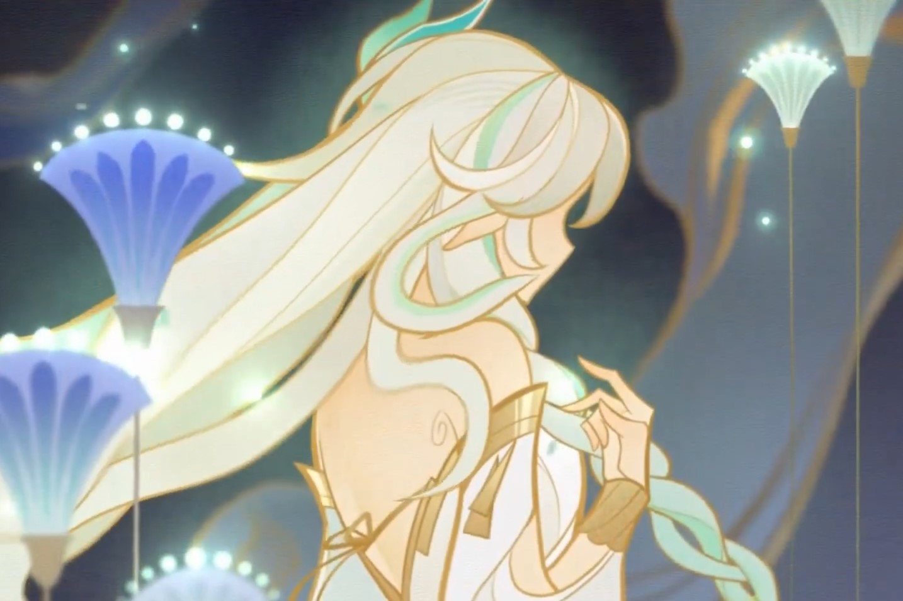

Capital da Cidade dos Eruditos Localizada no Oeste de Teyvat. Uma nação exótica com florestas tropicais exuberantes e desertos áridos coexistindo simultaneamente, onde inúmeros frutos da sabedoria crescem e murcham. Seja atravessando as florestas até os degraus da Cidade dos Eruditos ou cavando as ruínas nos confins do deserto, Viajantes de longe poderão obter conhecimentos valiosos aqui.
Sumeru é uma das sete nações de Teyvat. É a nação que venera o Deus da Sabedoria, Lorde Menor Kusanali. É reconhecida como centro do aprendizado acadêmico e abriga a Academia Sumeru. A sua paisagem apresenta desertos e florestas.
O Capítulo III: A Verdade entre as Páginas de Purana acontece nessa região.
Sem evidências claras, sugere-se que, ao contrário de outras nações, os três Deuses-Reis: Rei Deshret, Lorde Maior Rukkhadevata e Deusa das Flores compartilharam pacificamente o trono entre si. No entanto, após vários eventos que levaram à morte da Deusa das Flores e Rei Deshret, Lorde Maior Rukkhadevata foi intitulada como a única Arconte de Sumeru. Depois que Lorde Menor Kusanali apagou Rukkhadevata da Irminsul, o mundo agora reconhece Kusanali como a Arconte Dendro que surgiu da Guerra dos Arcontes.
Rei Deshret, também conhecido como Al-Ahmar e Amun, era o Senhor dos Desertos e um dos três Deuses de Sumeru, ao lado da Lorde Maior Rukkhadevata, a antiga Arconte Dendro, e Nabu Malikata, a Deusa das Flores. Ele morreu mais de mil anos antes dos eventos da história.
O Rei Deshret construiu seu domínio no deserto, cheio de tecnologia antiga e poderes misteriosos, como as Estruturas Primordiais. Faruzan também ficou presa em algumas ruínas relacionadas a ele que preservaram seu corpo e mente por um século sem estase. Os eremitas são descendentes de seus súditos, e alguns eremitas atuais ainda o adoram e desejam trazê-lo de volta. As brasas de sua civilização foram preservadas na forma da Vila Aaru, com o povo da vila, bem como seus Guardiões, como Candace, sendo metaforicamente referidos como seus descendentes.
Segundo a lenda, o Rei Deshret era um filho do céu, razão pela qual recebeu adoração fervorosa das tribos do deserto. Ele era amigo da Lorde Maior Rukkhadevata e Nabu Malikata e dividiu seu trono com eles durante a Guerra dos Arcontes. Ele rejeitou o "presente" dado a ele por Celestia (implícita ser uma Gnosis e, por extensão, a posição de Arconte) para perseguir seus próprios interesses e ambições. Ele e Nabu Malikata uniram forças e construíram o antigo reino de Ay-Khanoum, que significa "Cidade da Donzela da Lua" na antiga língua dos Jinn. Para construir este reino, ele fez um acordo com o antigo dragão Apep em que, depois que ele morresse, o consumiria pelo conhecimento que havia adquirido.
Ele tinha desejos e ambições que foram mantidos em segredo pela maioria das pessoas, mas dizem que "pode chocar até o mais sábio dos deuses". É sugerido que quaisquer que sejam seus desejos, rebelar-se e cometer transgressões contra o divino fazem parte disso. Em uma noite bebendo, ele compartilhou todos os seus desejos com Nabu Malikata depois que ela o alertou sobre as possíveis repercussões dos Princípios Celestiais. Nabu Malikata percebeu que o desejo teimoso do rei Deshret não pode ser interrompido, ao mesmo tempo em que percebeu que seu desejo pode trazer "a possibilidade de transcender os grilhões absurdos que governam este mundo" e, portanto, finalmente concordou em ajudá-lo a manifestar seus desejos "formando uma ponte" e "concedendo conhecimento superior" a ele, avisando-o de que perderá muito na troca. Depois de um certo ritual feito pelos dois, o rei Deshret emergiu sozinho e Nabu Malikata nunca mais foi vista.
Após a morte da Deusa das Flores o Rei Deshret lamentou-a profundamente. Após a morte de sua deusa, inúmeros Jinn, criações de Nabu Malikata, tornaram-se seus servos. Ele finalmente enlouqueceu em seu desejo, e a Lorde Maior Rukkhadevata decidiu partir e criou um oásis em um canto do deserto, construindo uma próspera floresta tropical.
O rei Deshret então criou sua utopia, livre de "preocupações, esquemas e escravidão", com base no que Nabu Malikata lhe ensinou uma vez.
Mais tarde em sua loucura, o rei Deshret acabaria liberando conhecimento proibido sobre o mundo, o que rapidamente devastaria seu povo e traria O Definhamento à existência, com Eleazar sendo uma manifestação disso nas pessoas. Rukkhadevata, que havia deixado o deserto e criado as florestas até então, veio em seu socorro e fez com que sacerdotes construíssem templos com o poder da vida para mitigar o desastre, e os sobreviventes da civilização do rei Deshret se reuniriam na vila de Aaru. Uma vez que o conhecimento proibido permaneceu uma ameaça, no entanto, o rei Deshret escolheu sacrificar sua vida, encerrando temporariamente o desastre.
Devido ao acordo deles, Apep consumiu Deshret depois que ele morreu para reunir seu conhecimento, mas como Deshret havia adquirido apenas conhecimento proibido, acabou corrompendo Apep. Apep acreditava que Deshret estava intencionalmente ciente disso e o usou como uma proteção contra falhas em seu plano.
Nabu Malikata, a Deusa das Flores, viveu durante a época em que o Segundo Descido chegou de além do firmamento e trouxe a guerra para seu povo, embora ela reconheça que eles "trouxeram ilusões que poderiam romper os grilhões da terra". Mais tarde, ela foi "lançada pelos céus" junto com o resto de seu povo, que foram punidos por um pecado desconhecido ao serem despojados de suas mentes e se tornarem cascas de seus antigos eus. De alguma forma, Nabu Malikata conseguiu manter sua forma original. Segundo a lenda, ela vagou pelos desertos estéreis por setenta e dois dias. Fontes brotavam de suas feridas, tornando-se riachos que desaguavam em jardins. Os lírios cresceram nesses jardins, e os Jinn nasceram deles. O primeiro jinn implorou para que ela ficasse com eles, e ela cedeu. Flores roxas parecidas com a lua desabrochavam onde quer que ela parasse e eram chamadas de Padisarahs.
Algum tempo depois, ela conheceu a Lorde Maior Rukkhadevata e o Rei Deshret, que dividiu seu trono com eles, embora a maioria dos deuses de Teyvat estivessem guerreando uns contra os outros pelo poder durante a Guerra dos Arcontes. Eles eram conhecidos como os Reis-Deuses de Sumeru e eram bons amigos. Nabu Malikata e o rei Deshret construíram a antiga civilização de Ay-Khanoum no deserto como um paraíso terrestre. A Deusa das Flores foi a criadora e homônima do Festival Sabzeruz, que originalmente comemorava o aniversário de Rukkhadevata. Após sua morte, o Festival de Sabzeruz tornou-se uma celebração do aniversário de sua sucessora, Lorde Menor Kusanali.
Em algum momento, Nabu Malikata previu a vinda do cataclismo, então ela criou um fragmento de Khvarena, a quem ela se referia como sua filha. Este fragmento acabaria por se transformar no pássaro divino Simurgh. O pássaro divino estaria destinado a se sacrificar durante o cataclismo para salvar o Amrita que está sendo corrompido pelo abismo. Nabu Malikata deu o fragmento para Rukkhadevata porque ela acreditava que a "luz" de Rukkhadevata é mais radiante que a dela.
O rei Deshret era ambicioso e rejeitou "o dom concedido pelo trono divino", querendo buscar seu próprio caminho para seu povo. Nabu Malikata o advertiu para não buscar conhecimento proibido. Ela contou a ele sobre os pilares divinos e as calamidades que eles causaram. No entanto, o rei Deshret permaneceu implacável e contou a ela sobre suas próprias ambições. Nabu Malikata admirou seu espírito rebelde e decidiu ajudá-lo na busca do conhecimento oculto, sabendo o tempo todo que ela morreria.
Segundo a lenda, Nabu Malikata morreu "devido à malícia do sol escaldante e da areia amarela". Embora a causa real de sua morte seja atualmente desconhecida, foi sugerido que ela planejou sua morte para que a amargura de sua morte preservasse seu legado para sempre. O rei Deshret, que estava apaixonado por ela, nunca percebeu suas intenções.
A flor Padisarah original foi extinta com sua morte e, embora Lorde Maior Rukkhadevata tenha tentado recriar as flores, ela não conseguiu recriar seu tom original de roxo.
A Lorde Maior Rukkhadevata foi a arconte Dendro original de Sumeru, o avatar de Irminsul, e a predecessora da atual Arconte Dendro, Lorde Menor Kusanali. Como sua sucessora, Rukkhadevata detinha o título de Deusa da Sabedoria.
Rukkhadevata já foi um dos três Reis-Deuses de Sumeru ao lado do Rei Deshret e Nabu Malikata. Após a morte de Nabu Malikata, Rukkhadevata optou por não ficar ao lado do rei Deshret e, em vez disso, estabeleceu seu próprio território cultivando uma floresta tropical com a engenhoca Varuna. Os Aranara, suas criações e familiares, a chamavam de Rainha Aranyani.
Durante o cataclismo há quinhentos anos, o Rukkhadevata foi uma das vítimas do conflito. Antes de sua morte, ela criou o Sistema Akasha para expurgar o conhecimento proibido de Irminsul e criou sua próxima encarnação, Lorde Menor Kusanali, que então ascendeu como a atual Arconte Dendro e Deusa da Sabedoria.
No final das Missões de Arconte Sumeru, Rukkhadevata se sacrifica fazendo com que o Lorde Inferior Kusanali remova todas as memórias de sua existência de Teyvat. A única pessoa conhecida que ainda se lembra claramente dela é o Viajante, o que eles acreditam ser porque não são de Teyvat e, portanto, suas memórias não estão sob a jurisdição de Irminsul.
Após a guerra entre os Sete Soberanos e os Princípios Celestiais foi concluída, um dos pilares divinos lançados pelos Princípios Celestiais para consertar a terra devastada transformou a maior parte do verdejante Sumeru no deserto agora conhecido como o Grande Mar de Areias Escarlates. O pilar suprimiu o dragão dendro Apep, forçando-o a se adaptar ao ambiente do deserto. Não se sabe quando ou como Lorde Rukkhadevata surgiu, mas nas primeiras lendas envolvendo ela, ela era a princesa de uma área onde a floresta ainda prosperava, o que pode ser devido a uma suposta presença divina.
Nabu Malikata ouviu falar da sabedoria de Rukkhadevata e ficou impressionada com as respostas da princesa aos seus enigmas. As duas formaram uma aliança que também incluía o Rei Deshret, que havia escolhido "dividir" seu trono, levando os três a serem conhecidos como os Reis-Deuses de Sumeru; os três tinham suas próprias opiniões sobre "sabedoria" e frequentemente debatiam suas ideias juntos. Por um período de tempo, Rukkhadevata presumivelmente viveu no deserto e até hoje, uma cadeira com o nome dela inscrito pode ser encontrada no Pomar de Pairidaeza.
Em algum momento, Nabu Malikata previu a vinda do cataclismo e percebeu que a humanidade poderia não sobreviver por conta própria, então ela informou a Rukkhadevata sobre o futuro que ela viu e confiou à outra deusa "uma parte de si mesma", um Khvarena de flores. De sua parte, a Deusa das Flores entendeu e abraçou seu próprio destino - morrer levando o Rei Deshret no caminho da compreensão do conhecimento proibido, apesar de saber que seus esforços eram inúteis, na esperança de um dia derrubar os Princípios Celestiais. Após a morte da deusa, Rukkhadevata rompeu os laços com o rei Deshret e voltou para a floresta para perseguir suas próprias idéias de sabedoria.
Depois de se desentender com Deshret, Rukkhadevata criou a Máquina Varuna em uma seção do deserto, após o que o reflexo do luar na água criou a imagem de um labirinto. Este labirinto deu à luz a besta divina semelhante a um tigre Viaghara, o primeiro senhor da floresta, que passou a fazer amizade com Rukkhadevata. Depois que Rukkhadevata criou os Aranara, pequenas criaturas parecidas com plantas com a habilidade de controlar os sonhos, os Aranara e os senhores da floresta usaram "sonhos e ilusões" e "cercas vivas e riachos", respectivamente, para proteger a Máquina Varuna.
Com a ajuda de seus seguidores, que estabeleceriam o Darshan Amurta da Academia de Sumeru, Rukkhadevata reviveu uma floresta tropical florescente e a expandiu ainda mais. A cidade de Sumeru foi construída na Árvore Divina, uma árvore particularmente grande localizada na região da floresta de Sumeru, e os sábios da Academia ajudaram Rukkhadevata a administrar os assuntos da nação. Na fronteira entre a floresta e o deserto, a Muralha de Samiel foi erguida para evitar que a floresta sofresse desertificação.
Depois de saber da situação do povo de Deshret, Rukkhadevata veio em seu auxílio por causa de sua antiga amizade com Deshret. Ela reuniu as pessoas, instruindo-as a construir templos e criando a Vila Aaru como o último bastião da civilização de Deshret. Ela também gastou muito de seu poder para suprimir o conhecimento proibido e regrediu a uma forma infantil. Mesmo isso, no entanto, não foi suficiente - no final, o rei Deshret se sacrificou para finalmente acabar com isso.
Embora o povo do rei Deshret tenha sido salvo, a morte repentina de seu deus levou à queda da civilização de Deshret, cuja estabilidade já havia sido prejudicada pela destruição orquestrada de Liloupar do grande estado vassalo de Gurabad. Seu povo foi dividido em várias cidades-estados de curta duração, incluindo Gurabad, Tulaytullah e Saleh. Durante este tempo, a raça raposa conhecida como Valuka Shuna, que tinha sido súdita do Rei Deshret, só conseguiu sobreviver devido à graça de Rukkhadevata e eles se mudaram para a floresta tropical. No processo, seu pelo também ficou verde e aqueles com pelo mais escuro têm uma tolerância ao calor excepcionalmente baixa.
Após o fim da era das cidades-estados do deserto, Rukkhadevata reconstruiu o Khvarena confiado a ela pelo falecido Nabu Malikata no pássaro divino Simurgh. Ela encarregou Simurgh de guardar "a fronteira entre o novo nascimento e a morte".
Durante seu estado enfraquecido, Rukkhadevata também fez uma promessa com uma das Criaturas de Apep para apagar completamente o "apocalipse" - a assimilação do conhecimento proibido dentro de Apep e suas criaturas. Ela abençoou a criatura com força vital suficiente para ela sobreviver no Despenhadeiro, onde o conhecimento proibido é "transformado" devido ao poder do pilar divino que ali reside. Ela previu que se o conhecimento proibido fosse erradicado, as criaturas de Apep, que "se tornaram" o apocalipse, também perderiam uma parte de si mesmas. Ao transformar o conhecimento proibido em outra coisa, eles ainda se lembrariam dele. Ela e as criaturas de Apep criaram a Semente do Fogo, que poderia reativar o Heart of Oasis dentro de Apep e curar o dragão. No entanto, como ela estava enfraquecida, a Semente do Fogo era instável.
Quinhentos anos antes do início da história principal, o uso crescente de conhecimento proibido por Khaenri'ah culminou em um transbordamento de poderes e monstros abissais em Teyvat. Esses monstros abissais causaram estragos na terra sob o controle de Celestia e o Definhamento se espalhou incontrolavelmente pela floresta e pelo deserto, causando decadência e destruição tão terríveis que foi chamado de "A Maré Negra".
Para acabar com a devastação, Rukkhadevata embarcou em uma jornada final com alguns de seus seguidores e nunca mais voltou. A última rainha da floresta pereceu defendendo a floresta, enquanto os Aranara só conseguiram salvar a floresta com a ajuda do irmão do Viajante, a quem eles chamam de "Nara Varuna" devido à sua ajuda na proteção da Máquina Varuna. Como resultado da morte de Rukkhadevata, a "grama e as árvores nunca mais falaram" com Viridescent.
Durante a batalha dos deuses na Fenda Tunigi, a principal fenda de onde as criaturas abissais emergiram, eles suprimiram com sucesso o poder do Abismo - a um preço. Quando a antiga Arconte Hydro, a Senhora de Amrita, foi morta, seus restos mortais formaram a água chamada Amrita. Rukkhadevata desenvolveu o Harvisptokhm a partir dela para ancorar a antiga arconte ao reino mortal, e mantém o selo na fenda abissal absorvendo a impureza que emana dela. Dentro do Harvisptokhm está o lótus gigante Gaokerena, onde a consciência da falecida arconte dorme dentro dele. Simurgh acordou do sono e cumpriu seu destino, bebendo do Amrita e se transformando em incontáveis grãos de Khvarena, sacrificando-se para purificar o Amrita da mancha do Abismo. As milhares de partículas de Khvarena em que ela se transformou criaram várias formas de vida, incluindo a raça Pari.
Sugere-se que Rukkhadevata já havia morrido quando Simurgh completou seu sacrifício. No momento de sua morte, Rukkhadevata estava em Irminsul, que ela havia sido incumbida de proteger. Ao contrário dos outros membros dos Sete, Rukkhadevata não foi convocada para participar da guerra contra Khaenri'ah, já que proteger Irminsul era uma tarefa mais importante. A poluição do conhecimento proibido ocorreu junto com o desastre, e já havia invadido Irminsul e causado grande sofrimento a Rukkhadevata.
Ela criou o Sistema Akasha para "emprestar" os sonhos e a sabedoria de seus cidadãos e usou sua própria força uma segunda vez para limpar o conhecimento proibido, como fez com o rei Deshret milhares de anos atrás. No entanto, ela percebeu que, por ser o avatar de Irminsul, quando o conhecimento proibido corrompeu Irminsul, também corrompeu sua própria existência. Mesmo se ela morresse, ela viveria em memórias, e isso significava que Irminsul não poderia ser totalmente purificado da contaminação do conhecimento proibido. Como era impossível para Rukkhadevata apagar a si mesma, ela criou a Lorde Menor Kusanali do ramo mais puro de Irminsul para ser sua encarnação no "próximo samsara", deixando um rastro de pistas começando com a frase "Que o mundo me esqueça completamente".
Lorde Maior Rukkhadevata foi lembrada como uma deusa que protegeu Sumeru "desde tempos imemoriais" lidando com desastres e criando a floresta tropical para que o povo de Sumeru pudesse viver em paz. Alguns de seus seguidores mais dedicados, que eram pesquisadores, fundaram a Academia de Sumeru e a ajudaram a governar Sumeru. O Sistema Akasha, alimentado pela Gnosis Dendro, foi considerado seu legado. Desde então, foi reformado ela Academia em sua forma atual. Embora Lorde Menor Kusanali tivesse suas reservas sobre o uso atual do Akasha pela Akademiya, ela acreditava que era desejo de Rukkhadevata vê-lo levado ao seu potencial máximo e, portanto, não interferiu em seus assuntos até que os sábios decretassem seu plano de Samsara durante o Festival de Sabzeruz.
A Academia idolatrava muito Rukkhadevata - ou pelo menos, a sabedoria que eles acreditavam que ela personificava. Após o desaparecimento de Rukkhadevata, os sábios a procuraram. Eles encontraram Lorde Menor Kusanali - Nahida, que tinha uma grande semelhança física com sua antiga Arconte, e a trouxeram de volta para a cidade de Sumeru. Inicialmente, as pessoas se alegraram com sua descoberta e mudaram a data do Festival Sabzeruz para comemorar o aniversário de Kusanali. No entanto, após alguns exame, os sábios descobriram que Kusanali mal era diferente de uma criança humana comum; ela não tinha grande sabedoria nem a força de um deus. Decepcionados com seu novo deus, os sábios a trancaram no Santuário de Surasthana e reduziram muito seu foco na jovem deusa em favor de adotar o legado de Rukkhadevata.
O dispositivo no Santuário de Surasthana onde Nahida foi aprisionada foi criado por Rukhadevata como um espaço onde ela poderia meditar em paz. Após sua morte, os sábios reprogramaram a máquina para que ela pudesse ser controlada apenas por fora, e então colocaram a jovem deusa dentro dela. Como a masmorra foi criada pelo poder divino, Nahida não conseguiu escapar sozinha.
Com o tempo, e com a ajuda da campanha de desinformação da Akademiya, o povo de Sumeru esqueceu a verdadeira história entre Rukkhadevata e Deshret. Alguns acreditam que uma batalha entre os dois foi o que criou o deserto de Sumeru, e seguidores fanáticos de Deshret veem Rukkhadevata como uma traidora que o traiu e tomou o lugar de Arconte. Essa perversão da verdade permitiu que os sábios mantivessem um controle rígido sobre as informações em Sumeru, colocando o povo da floresta contra os eremitas, tornando mais fácil para os sábios manipular os dois grupos nos bastidores.
Ao longo das Missões do Arconte Sumeru, o Viajante se envolve nos assuntos das nações quando sua busca para obter uma audiência com Lorde Menor Kusanali os leva à Cápsula do Conhecimento Divino, que foi extraída de estudiosos que entraram em contato com a consciência de Rukkhadevata. Depois de aprender sobre o tratamento dado pelos sábios a Nahida, sua ambição de criar um deus falso e o envolvimento de Fatui, o Viajante resolve ajudar a libertar Nahida e encontrar uma maneira de acabar com a crise fulminante. Depois que o Viajante derrota o falso deus Shouki no Kami, Nahida obtém a Gnosis Electro que estava na posse de Scaramouche e a usa para entrar no reino da consciência de Rukkhadevata, que contém suas memórias finais. Depois de chegar ao Irminsul onde o remanescente de Rukkhadevata está localizado, Nahida percebe o propósito para o qual foi criada.
Apesar de sua relutância, Nahida não tem escolha a não ser eliminar Rukkhadevata de Irminsul para remover completamente o conhecimento proibido. Posteriormente, as consequências do conhecimento proibido (sussurros enlouquecidos, O Definhamento e Eleazar) desaparecem, mas a própria Rukkhadevata é eliminada da história, como se ela nunca tivesse existido no mundo. Enquanto ela ainda existia, ninguém se lembra dela e todas as referências a ela foram reescritas para se referir a um genérico "Senhora da Verdura", que as pessoas entendem ser uma Nahida pré-amnésia. O único indivíduo que ainda se lembra da Lorde Maior Rukkhadevata é o Viajante, um Descendente, embora Nahida tenha mencionado que ela instintivamente sente como se houvesse alguém antes dela. Após a remoção do conhecimento proibido, Nahida finalmente cumpre a promessa de Rukkhadevata de milhares de anos atrás com as criaturas de Apep e salva Apep de sua doença.
A Academia (Akademiya) de Sumeru é o principal corpo governante de Sumeru, bem como o instituto de maior prestígio em toda a Teyvat, localizado no meio do tronco da árvore da cidade de Sumeru. É particularmente conhecido por seu corpus em artes arcanas e registros históricos.
Ela aceita estudantes de toda Teyvat e frequentemente envia estudiosos viajantes, conhecidos como Driyosh, a outras nações para coletar material para pesquisa. Não se sabe há quanto tempo a Akademiya existe, mas já era um instituto de prestígio na época do cataclismo, 500 anos atrás. É uma instituição milenar, o que significa que foi fundada há mais de 1000 anos. Ela também assume o papel de órgão governante de Sumeru, lidando com muitos dos assuntos do dia-a-dia de Sumeru.
A Akademiya tem três virtudes e seis pecados. As virtudes são descritas nos Livros de Aumento de Talentos de Sumeru, enquanto os pecados foram considerados pelos sábios como as fontes de todos os crimes e banidos para proteger os pesquisadores de uma busca descuidada pelo conhecimento. Eles são a base das regras do Akedemiya, e os sábios vêm acrescentando novas regras e emendas desde então. Pesquisar tópicos relacionados a esses pecados o exporá a punições, como expulsão da Akademiya ou prisão.
A Academia de Sumeru está atualmente dividida em Seis Darshans, cada um com uma especialidade e uma cor designada para seu uniforme. Os primeiros Darshans foram estabelecidos ao mesmo tempo que a própria Akademiya pela Lorde Maior Rukkhadevata sob o nome de Seis Grandes Escolas, cada uma representando um tipo de sabedoria liderada por um Grande Sábio. Embora Darshans adicionais separados dessas Escolas tenham sido criados ao longo da história, apenas as Seis Grandes Escolas resistiram ao teste do tempo. Hoje em dia, os Seis Darshans e as Seis Grandes Escolas são quase sinônimos.
| Darshan | Brasão | Especialidade | Personagens Membros |
|---|---|---|---|
| Amurta | Biologia | ||
| Spantamad | Elementalismo | ||
| Kshahrewar | Tecnologia | ||
| Haravatat | Semiótica | ||
| Vahumana | Etiologia |  |
|
| Rtawahist | Iluminismo |
Os Aranara são uma raça de espíritos da floresta semelhantes a plantas que residem em Vanarana, no norte de Sumeru. Eles são encontrados na série de missões de mundo Aranyaka. Eles foram liderados pela Lorde Maior Rukkhadevata - a quem chamavam de "Rainha Aranyani" - até seu desaparecimento.
Os Aranara viveram em Sumeru na velha Vanarana até que o Cataclismo ocorreu. Muitos Aranara lutaram ferozmente contra os invasores do Abismo, mas foram forçados a abandonar seu antigo lar e fazer um novo lar em Vanarana.
Em algum momento antes dos eventos do jogo, o Irmão do Viajante se encontrou com o Aranara, que se referiu a eles como "Nara Varuna". Eles os ajudaram com a Engenhoca Varuna antes de sua partida, após o que lhes disseram para esperar outro humano de cabelos dourados que lhes daria memórias ainda melhores.
Os Aranara normalmente não confiam na maioria dos humanos, especialmente nos adultos, embora sejam amigos de crianças e sejam frequentemente referidos como um mito, pois nenhum adulto jamais os viu com seus próprios olhos antes. Os Aranara relacionam isso a um sentimento de desconfiança nos adultos e, portanto, os consideram "adultos", que tentam se despedir de seus eus mais jovens, mas raramente conseguem. Eles veem as crianças como aquelas que não "cresceram", embora tenham feito algumas exceções a isso, caso as considerem confiáveis, como Rana e Yoimiya.
Todos os Aranara são capazes de se esconder do olho humano, embora sejam vistos apenas por crianças, provavelmente pelo fato de sonharem, enquanto os adultos não.
Estando em sintonia com a natureza, os Aranara também são capazes de se comunicar com plantas, especialmente fungos (por exemplo, cogumelos Rukkhashava)
Aranaras amam memórias, embora alguns deles sejam propensos a esquecer com bastante facilidade, então alguns Aranaras dão flores a seus amigos para que possam se lembrar deles se se encontrarem novamente. Eles podem recorrer às memórias para obter poder para usar das plantas da floresta, conhecidas como Ararakalari. Cada Aranara tem seu próprio Ararakalari, que pode ser usado para combater inimigos, restringir ou suprimir sua força, se teletransportar por grandes distâncias em um instante e até mesmo bloquear várias áreas.
{kind=link}
{kind=link}
{kind=link}
{kind=link}
{kind=link}
{kind=link}
{kind=link}
{kind=link}
{kind=link}